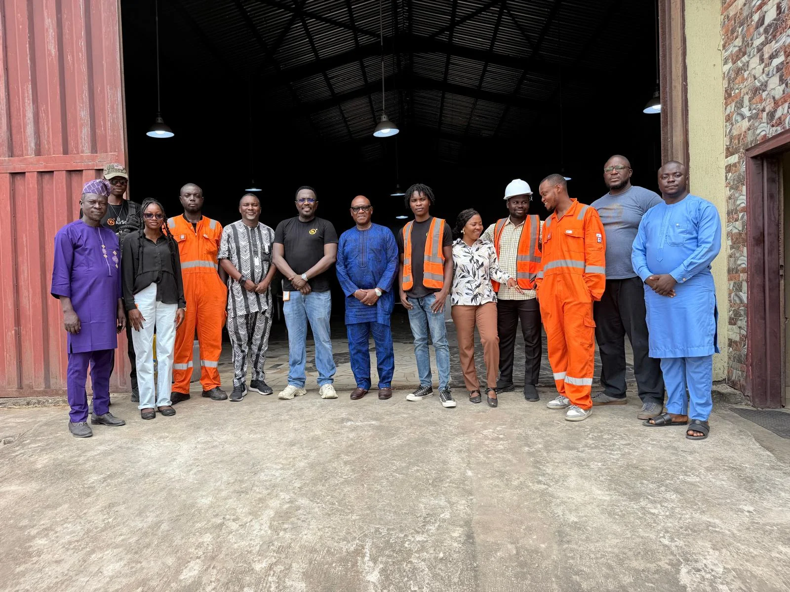
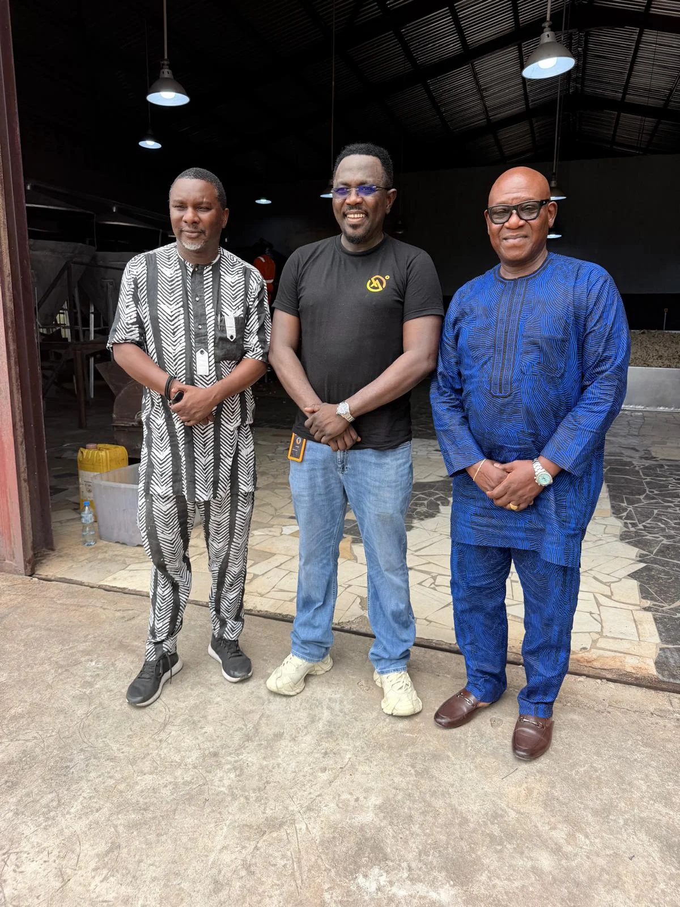

Empower
Connect farmers and processors with markets and commercial opportunities.
About ARA Greenfield
Connecting people, products and expertise across agricultural markets.

Relationships at the heart of the businessWho we are
ARA Greenfield Limited specialises in commodity exports, trading and agricultural consulting. We bring together market knowledge and supplier relationships to support agricultural trade.
Our portfolio includes rice, corn, sesame, barley, sorghum, oats, cocoa, beans, wheat and soybeans, alongside precious metals and pharmaceutical trade enquiries.
From domestic buyers to international partners, our focus is understanding requirements and building productive commercial relationships.


Our purpose
Connect farmers and processors with markets and commercial opportunities.
Support food security through sourcing relationships and effective supply chain coordination.
Match buyers with commodities and services suited to their needs.
Leadership
Chief Executive Officer
Brings over 19 years of experience in international operations, market analysis and regulatory compliance to global commodity trade and agribusiness development.
Executive Director
Brings more than 15 years of agribusiness experience, spanning herbs and spices, export value chains, cashew cultivation and climate-related initiatives.
Executive Director
Contributes expertise in technology, operations and organisational development, supporting process improvement and the company’s digital growth.
People & places
A selection of meetings and visits from the company’s media collection.
Working together
Grain and seed processing expertise, supporting agricultural value chains through specialist systems and technical knowledge.
Experience in food production, distribution and digitisation across Africa, supporting more effective agricultural supply chains.
Producer of BROWN, a Nigerian biochar-based fertiliser designed to support crop nutrition and soil health.
Explore BROWN